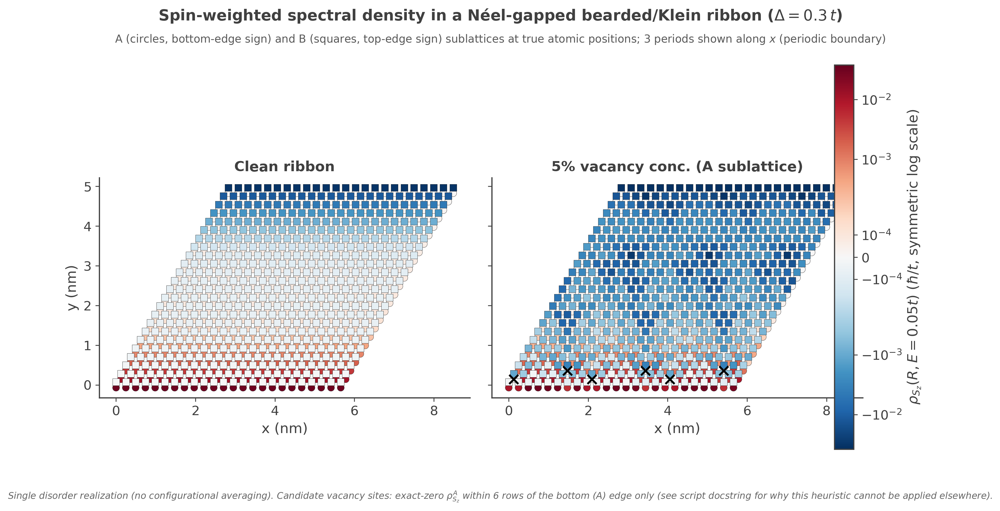
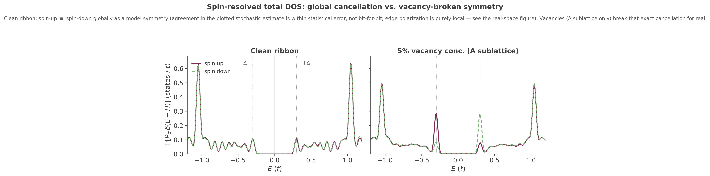

Néel-Gapped Bearded/Klein Ribbon (Operator LDOS)
Néel-gapped bearded/Klein ribbon: operator-weighted LDOS and spin-resolved DOS¶
A worked example of ldos_map(operators=[...]) and per-spin custom_one()
on a bearded/Klein-terminated graphene ribbon with a fixed (not self-consistently solved)
staggered on-site mass — opposite sign per sublattice, opposite sign per spin. It exercises three
related API features together: operator-weighted local spectral density, structural vacancy
disorder, and spin-resolved total DOS.
The model¶
examples/afm_zigzag_ribbon.py's afm_zigzag_lattice() builds a 4-sublattice
honeycomb lattice (Aup, Bup, Adn, Bdn) with on-site energies \(+\Delta\) on Aup/Bdn and
\(-\Delta\) on Bup/Adn (\(\Delta=0.3\,t\) here), periodic along \(\mathbf a_1\) and open along
\(\mathbf a_2\). The three nearest-neighbor bond offsets this lattice uses — \((0,0)\), \((1,-1)\),
\((0,-1)\) in unit-cell coordinates — put both of a bulk A atom's non-intracell bonds toward the
same row (\(y-1\)), and both of a bulk B atom's toward \(y+1\); cutting the open boundary therefore
removes both of a boundary A atom's inter-row bonds at once (coordination 1), not one of two as
an ordinary zigzag edge would. This is a bearded/Klein-type termination, not an ordinary
zigzag edge, despite an otherwise-honeycomb bulk.
That termination still supports two near-flat edge bands close to \(E=\pm\Delta\), each localized on one sublattice at one edge and (because the mass flips sign between spins) on one spin as well. These bands sit at \(E=\pm\Delta\) exactly only at \(k=0\) (where the massless edge state is exactly single-sublattice, so the diagonal mass term acts on it as a scalar) and stay extremely close to \(\Delta\) through most of the zone; they are not protected by chiral symmetry of the massive Hamiltonian itself (the staggered mass commutes, rather than anticommutes, with the sublattice operator, so this symmetry argument applies to the massless limit, not the full Hamiltonian) — see the script's own docstring for the full, numerically-checked derivation.
Mapping the local spectral density: ldos_map(operators=[...])¶
ldos_map() normally computes a single, plain quantity: the local density of states at
every site, at one target energy, via a stochastic (random-vector) KPM estimate. Its
operators= parameter generalizes this to \(\rho_O(r,E)=-\tfrac1\pi\text{Im}\,
\text{Tr}[O\cdot G(r,r,E)]\) — the same map, but weighted at every site by a Hermitian on-site
operator \(O\) instead of the identity, so instead of "how many states" you get "what expectation
value of \(O\) do the states at this site/energy carry." Passing operators=None (the
default) reproduces the plain LDOS map unchanged.
Two different costs are worth keeping separate here. Requesting multiple operator labels
together (as l0 and l1 are here) is cheap: internally, all requested labels are evaluated from
the same random-vector propagation, so adding a second or third label doesn't add another
stochastic run. Requesting operators at all, however, is not free relative to a plain LDOS map:
KITEx dispatches the operator-weighted map as its own separate calculation
(calc_ldos_operators(), distinct from plain ldos_map()'s calc_ldos()), with its own
random-vector propagation and its own disorder realization. If you request both a plain map and an
operator map in the same run, you pay for two independent stochastic calculations, not one shared
one — and their results are not guaranteed to come from matching disorder/random-vector draws
unless you control that yourself (e.g. fixed seeds).
Reproducibility: seed_h¶
This script's vacancy placement (vacancy_concentration > 0) comes from randomness that, by
default, KITE draws from the operating system and never records anywhere — so running the script
twice puts the vacancies at different sites each time, and neither run can be regenerated later.
kite.Configuration() accepts a seed_h parameter that fixes this:
configuration = kite.Configuration(
divisions=[1, 1], length=[lx, ly], boundaries=['periodic', 'open'],
is_complex=True, precision=1, spectrum_range=[-4, 4],
seed_h=seed_h, # 987654321 by default here
)
seed_h seeds the Hamiltonian-side randomness — here, which sites the vacancies land on. It gets
written into the exported HDF5 file (/Seed0) and read back by KITEx, so as long as the HDF5
file, decomposition, and build are unchanged, re-running KITEx on it puts the vacancies at the
exact same sites again — this is what makes a clean-vs-vacancy comparison meaningful (the same
disorder realization every time) rather than comparing against a new random defect pattern on each
run. Passing seed_h=0 (KITE's own default) goes back to "don't care" behavior.
The companion seed_v (seeding the random probe vectors ldos_map() uses internally) is
deliberately left at its default here: with vectors=4000, the stochastic LDOS estimate is already
well self-averaged, so which particular random vectors were drawn doesn't change the physical
picture the way which sites got vacancies does — unlike the vacancy positions, there isn't a
meaningful "same run again" to preserve for seed_v in this example. See kite.Configuration's entry in the API reference for the full description of both
parameters, including the current limitation that neither seed makes a plain map and an
operator-weighted map requested together draw from the same realization (the "Two different costs"
paragraph above).
\(O\) itself is never passed as a matrix. It's built the same way custom_one()/
custom_two()/gaussian_wave_packet() build their operators — two steps:
def register_sz_operators(calculation):
# Step 1: give each orbital a name. This just creates a name -> index lookup
# table on `calculation`; it does not touch the Hamiltonian.
for lbl, idx in [('Aup', 0), ('Bup', 1), ('Adn', 2), ('Bdn', 3)]:
calculation.add_orbital_index(lbl, idx)
# Step 2: add_orbital_coupling(start, last, c, label) sets one matrix entry
# O[last, start] = c in the operator registered under `label` (note the
# reversed row/col order relative to the argument order -- invisible for
# a diagonal entry like these, where start == last, but matters for an
# off-diagonal operator). Call it once per nonzero entry; unset entries
# default to zero.
calculation.add_orbital_coupling('Aup', 'Aup', 0.5, 'l0') # -> l0 = diag(+0.5, 0, -0.5, 0)
calculation.add_orbital_coupling('Adn', 'Adn', -0.5, 'l0') # = Sz restricted to sublattice A
calculation.add_orbital_coupling('Bup', 'Bup', 0.5, 'l1') # -> l1 = diag(0, +0.5, 0, -0.5)
calculation.add_orbital_coupling('Bdn', 'Bdn', -0.5, 'l1') # = Sz restricted to sublattice B
return ['l0', 'l1'] # hand the label list straight to ldos_map's operators=
One combined \(S_z=\text{diag}(+\tfrac12,+\tfrac12,-\tfrac12,-\tfrac12)\) (uniform across both
sublattices) would still be a valid registration, but it would sum the two sublattices' opposite
edge polarizations together at every site and hide the checkerboard/edge pattern this example is
about — hence two separate labels, l0 (A-sublattice-only) and l1 (B-sublattice-only), each
zero on the sublattice it doesn't cover.
With that registration done, the actual call is the same ldos_map() you'd write for a
plain map, plus the label list:
operators = register_sz_operators(calculation) # -> ['l0', 'l1']
calculation.ldos_map(energy_=energy, sigma_=sigma, vectors_=vectors, operators=operators)
energy_/sigma_/vectors_ mean exactly what they mean for a plain ldos_map() call
(target energy, Gaussian broadening width, number of random vectors) — operators= doesn't
change any of that, it only adds extra output. After the run, KITEx writes one array per label:
/Calculation/ldos_map/Map_Operators/l0 and .../l1 in the output HDF5 file, each one value per
unit cell (reshape to (ly, lx) to recover the 2D grid — see afm_zigzag_ribbon_process.py).
Comparing a clean run (vacancy_concentration=0.0) against a ~5% vacancy run (both spin channels
removed at the same site, via two add_vacancy() calls on one shared
kite.StructuralDisorder instance) shows how a defect locally disturbs the edge spin
pattern:

The default energy=0.05, sigma=0.1 probes broadened in-gap spectral weight, below the edge-band
energy \(\Delta=0.3\) rather than on it. \(E=\Delta\) is both the ideal edge-state energy and the bulk
band edge (the bulk gap closes at exactly \(|E|=\Delta\) in this model) — so a Gaussian window
centered there also overlaps bulk states, making a single-disorder-realization comparison less
visually selective.
Mapping the global spin balance: custom_one() with spin projectors¶
ldos_map is a local probe (one value per site) — it doesn't by itself tell you
whether the two edges' opposite polarizations cancel when you add up the whole ribbon.
afm_zigzag_dos.py answers that different question with a different tool:
calculation.custom_one() computes \(\text{Tr}[A\cdot T_n(\tilde H)]\) — a single number
per Chebyshev moment \(n\), summed over the entire system, which reconstructs into
\(\text{Tr}[A\,\delta(E-H)]\): the total, energy-resolved density of states weighted by operator
\(A\) (no \(r\) dependence at all, unlike ldos_map).
Here \(A\) is deliberately the projector onto one spin (weight 1 on that spin's two sublattices, 0 on the other), not \(S_z\): \(\text{Tr}[S_z\,\delta(E-H)]\) would only give you spin-up-minus-spin-down (their difference), whereas registering each spin's projector separately lets you compare spin-up DOS against spin-down DOS directly, side by side:
def register_spin_projector(calculation, spin):
for lbl, idx in [('Aup', 0), ('Bup', 1), ('Adn', 2), ('Bdn', 3)]:
calculation.add_orbital_index(lbl, idx)
if spin == "up":
calculation.add_orbital_coupling('Aup', 'Aup', 1.0, 'l0') # -> l0 = diag(1,0,0,0)
calculation.add_orbital_coupling('Bup', 'Bup', 1.0, 'l0') # + diag(0,1,0,0)
else: # = P_up
calculation.add_orbital_coupling('Adn', 'Adn', 1.0, 'l0') # -> l0 = P_down instead
calculation.add_orbital_coupling('Bdn', 'Bdn', 1.0, 'l0')
return ['l0']
Calling it looks like this — custom.Vertex packages the registered label (with a
coefficient, here 1.0) into the "vertex" custom_one() expects, and num_moments
here plays the same role as it does for ldos()/dos() (Chebyshev expansion
order, i.e. energy resolution):
from kite import custom
vertex = custom.Vertex(num_moments, [[1.0, "l0"]])
calculation.custom_one(stream_=vertex, num_random_=num_random, num_disorder_=num_disorder)
calculation.dos() is also called in the same script, unrelated to the operator — it's
just the ordinary, un-weighted total DOS, kept alongside as a reference curve. Because the Python
exporter's HDF5 writer only ever serializes the first registered custom_one() vertex
(calculation._custom_one[0], regardless of how many times you call custom_one()), spin-up and
spin-down are run as two separate KITEx jobs (two calls to register_spin_projector, two output
files), each producing its own .h5/.dat output — afm_zigzag_dos_process.py then loads all
four .dat files (clean/vacancy × up/down) and plots them together.

Running it¶
# 1. Real-space Sz map: clean vs. 5% vacancy
python afm_zigzag_ribbon.py 0.0 # -> afm_zigzag_ribbon_clean-output.h5
python afm_zigzag_ribbon.py 0.05 # -> afm_zigzag_ribbon_vac5-output.h5
../build/KITEx afm_zigzag_ribbon_clean-output.h5
../build/KITEx afm_zigzag_ribbon_vac5-output.h5
python afm_zigzag_ribbon_process.py afm_zigzag_ribbon_clean-output.h5 afm_zigzag_ribbon_vac5-output.h5
# 2. Spin-resolved total DOS: clean vs. 5% vacancy, up vs. down (4 runs)
python afm_zigzag_dos.py up 0.0
python afm_zigzag_dos.py down 0.0
python afm_zigzag_dos.py up 0.05
python afm_zigzag_dos.py down 0.05
../build/KITEx afm_zigzag_dos_clean_up-output.h5
# ... (repeat KITEx for the other three .h5 files)
../build/KITE-tools afm_zigzag_dos_clean_up-output.h5 --DOS -N dos.dat \
--CustomOne -E -4 4 1000 -N custom_clean_up.dat
# ... (repeat KITE-tools for the other three, matching custom_<tag>.dat names)
python afm_zigzag_dos_process.py
afm_zigzag_bands.py is a standalone, plain-numpy exact diagonalization of the same lattice
(bulk and ribbon bands) — no KITEx run needed — useful as a quick independent check of the
gap and edge-band energies before spending time on a full KPM run.
Example
Run the full script family yourself, and try a larger ly (more ribbon
width) or a different vacancy_concentration to see how the edge signal and its disorder
sensitivity scale.